Saunas, hammam y minipiscinas.
Te ofrecemos una amplia oferta de modelos de minipiscinas de exterior e interior. Imagínate la sensación de relax, limpieza y luminosidad en tu piel, la eliminación de estrés y alivio en las vías respiratoria, y máximo confort que una minipiscina puede aportarte.
Esto son sólo algunos de los efectos prácticos que obtendrás incorporando en tu proyecto de baños (tanto para hoteles, gimnasios y viviendas del más alto standing) un hamman o sauna de vapor, una sauna finlandesa, o bien una minipiscina standard, o eligiendo una, diseñada a medida para el espacio concreto del que se trate.
Nosotros te ayudaremos en el diseño, o a seleccionar entre las múltiples opciones que hoy existen.
Para estar al día, únete a nuestras redes sociales y a la newsletter. También puedes contactarnos para explicarnos con más detalle lo que necesitas, y seguir leyendo para ver alguna de las últimas novedades.
Marcas en el showroom
- Duravit
- Effegibi
- Zucchetti Kos
Y si lo que buscas no está en exposición, lo buscamos en la Bagnoteca.
Novedades 202617

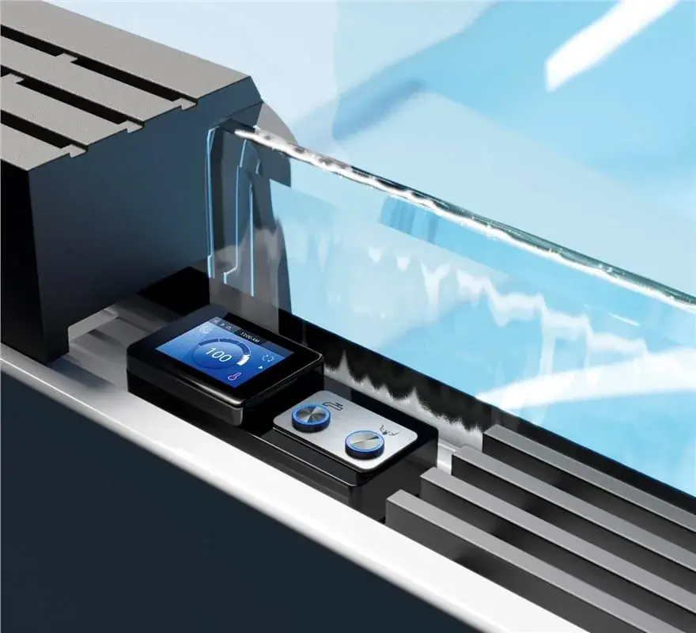
Saunas, hammam y minipiscinasMini piscina Ice - Tresse
La nueva minipiscina ICE de Treesse, diseñada por Marc Sadler, destaca por su elegante borde de cristal infinito que crea una continuidad visual entre espacios interiores y exteriores.
Con capacidad para 5/6 personas, esta mini piscina incorpora el sistema de hidromasaje Ghost Plus, ocultando boquillas y luces LED multicolores dentro de ranuras discretas para una estética limpia.
Bajo sus cojines, se esconden los controles que activan todas sus funcionalidades. ICE combina diseño sofisticado y funcionalidad, convirtiéndose en una opción ideal para todo tipo de ambientes.

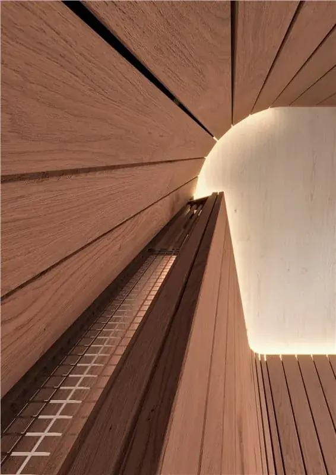
Saunas, hammam y minipiscinasSauna + Hammam Mirage - Tresse
El distinguido diseñador Marc Sadler presenta para Tresse la nueva sauna y hamman “Mirage”, una experiencia de relajación íntegra que combina sauna, baño turco y ducha en una sola cabina.
Ideal para hogares, hoteles y spas pequeños, esta solución de bienestar destaca por su elegante diseño italiano y alta técnica finlandesa.
Fabricada con maderas nobles y equipada con bancos curvos anatómicos, Mirage asegura comodidad en un ambiente premium, con iluminación íntima y aromaterapia, capaz de despertar todos nuestros sentidos.

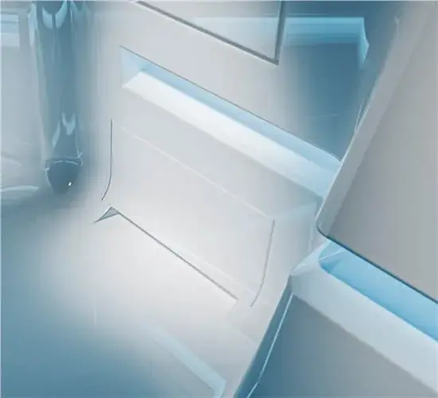
Saunas, hammam y minipiscinasMinipiscina Soul Spa - Tresse
El nuevo Soul Spa de Treesse es una mini piscina de hidromasaje que combina una estética minimalista y el máximo confort para asegurar una rutina de relajación exclusiva.
En esta búsqueda de la elegancia y sofisticación, los detalles funcionales del hidromasaje quedan escondidos a la vista. Para una mayor practicidad, tiene incluido un espacio para dejar objetos al alcance mientras se está usando.
Ideal para cualquier ambiente, tanto en viviendas privadas como para habitaciones de hotel, la marca tiene disponibles dos modelos en dos tamaños diferentes, según sea para una o dos personas.
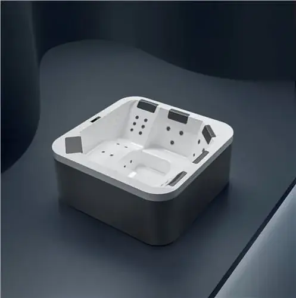
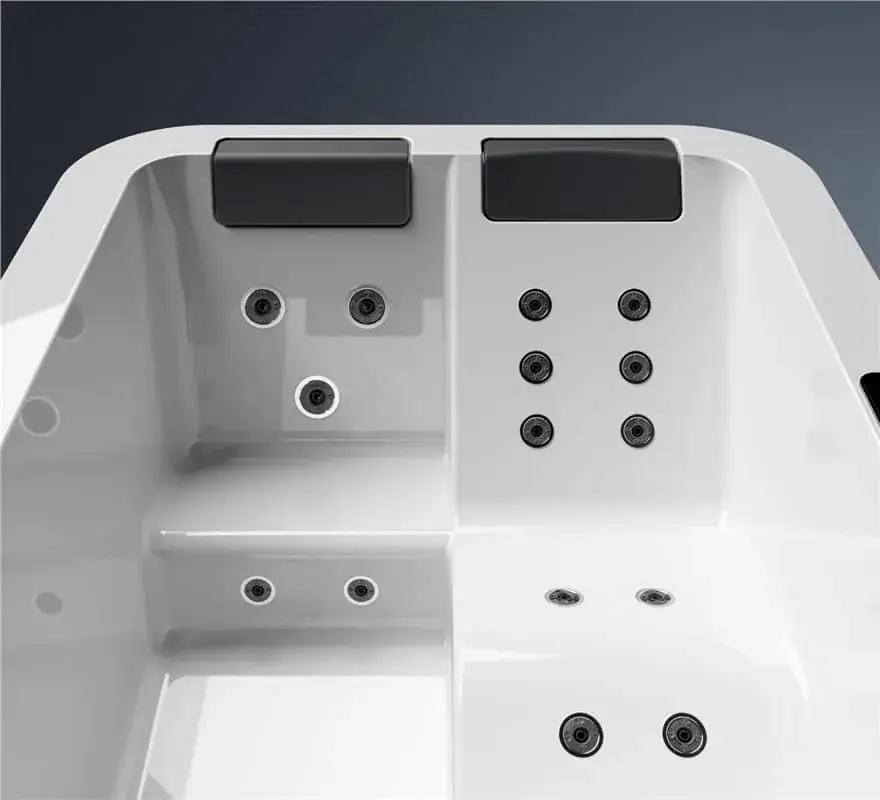
Saunas, hammam y minipiscinasMinipiscina con hidromasaje Breeze - Treesse
La nueva línea Breeze amplía la oferta de minipiscinas tipo Spa, diseñada por Marc Sadler para Treesse. Adecuada para interiores y exteriores, esta serie de hidromasajes está disponible en cuatro tamaños, siendo la más grande capaz de alojar hasta seis personas.
Sus cojines reposacabezas y boquillas de alto rendimiento, discretamente integradas sin sobresalir, optimizan el confort y crean un ritmo visual atractivo.
Breeze combina elegancia y funcionalidad, ideal para ambientes privados y hoteleros, ofreciendo una experiencia de bienestar sofisticada y contemporánea.
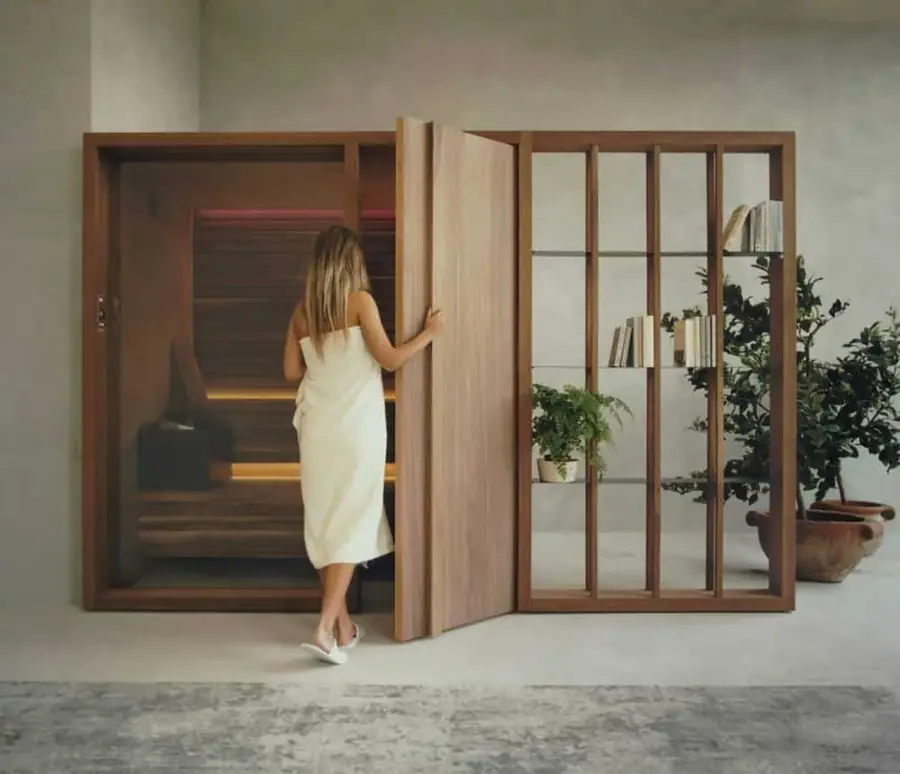
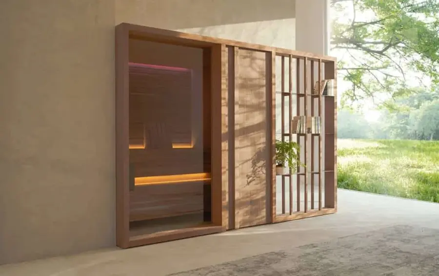
Saunas, hammam y minipiscinasSauna Yoku S – Effe
Effe te acerca la última innovación del diseñador italiano Marco Williams Fagioli: Yoku S. Una sauna de inspiración japonesa que conquista la esencia de la naturaleza exterior para traértela al interior de tu baño.
Con la madera como elemento principal, la serie está disponible en 3 soluciones estéticas distintas y 3 orígenes de madera diferentes. Todas ellas comparten un diseño lineal y minimalista, capturando la calidez del material.
El vínculo entre interior y exterior se mantiene gracias a una gran vidriera que hace de separación, además de tener espacio para estanterías.
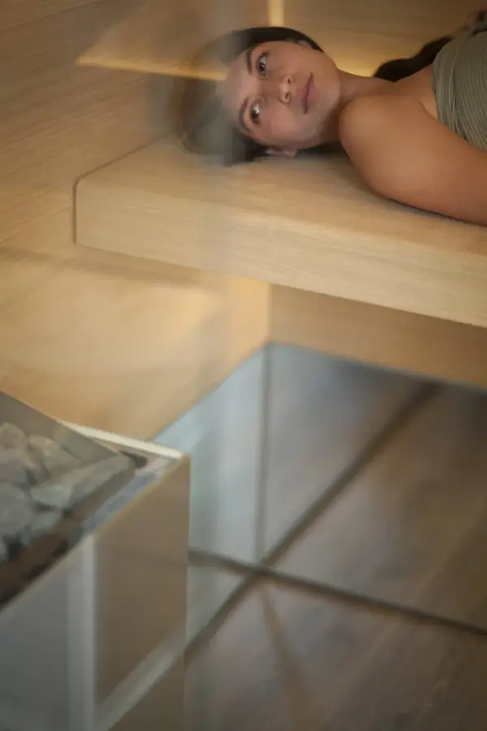
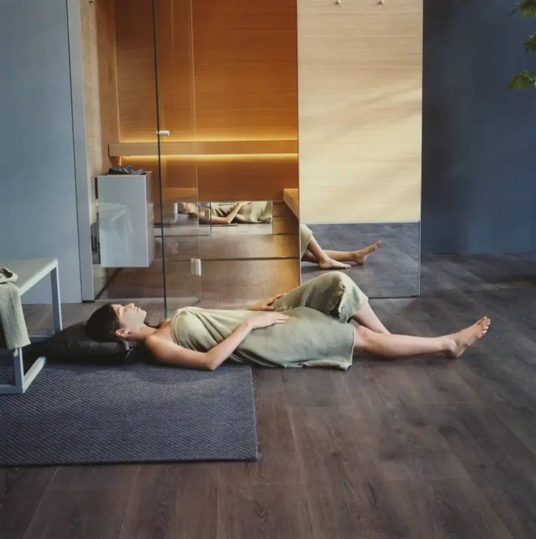
Saunas, hammam y minipiscinasSauna Aladdin - EFFE
Effe presenta Aladdin, una innovadora sauna que te transporta a un refugio de relajación profunda.
El diseño desafía a la gravedad reforzando esta idea de suspensión con la disposición de sus elementos y los materiales elegidos. Con acabados el aluminio y el gran protagonismo de los espejos, la sauna crea una sensación de ligereza y amplitud.
En su interior, la madera de bordes redondeados te invita a acunarte en un abrazo cálido y confortable. Aladdin no es solo una sauna, es una obra de arte que transforma tu hogar en un oasis de bienestar.
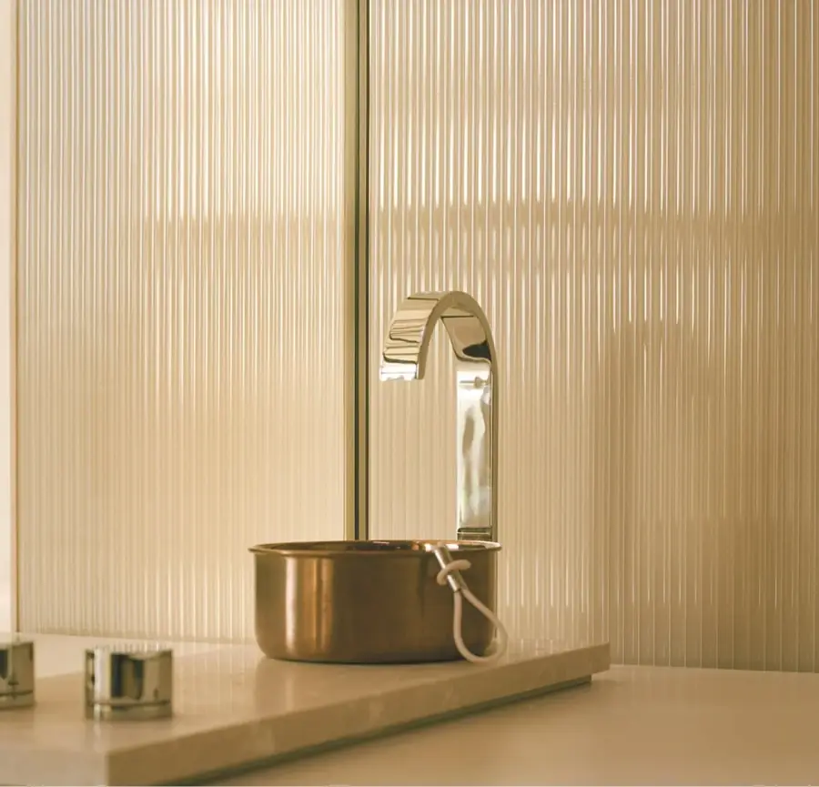
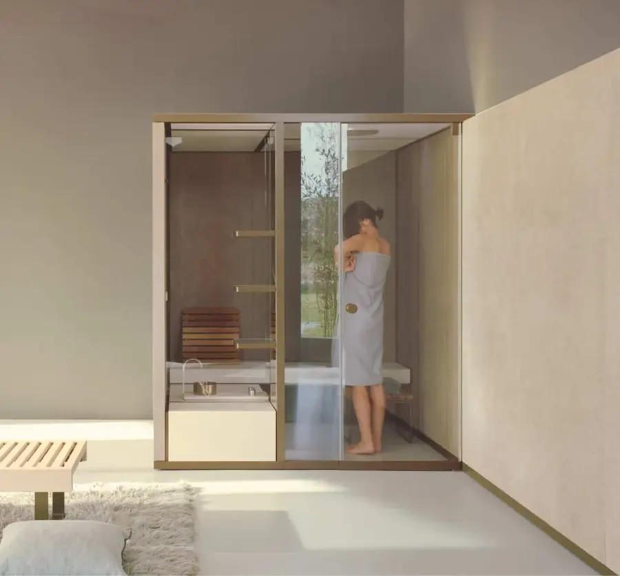
Saunas, hammam y minipiscinasDucha y baño turco Bodylove H - EFFE
Effe ofrece la nueva propuesta del diseñador italiano Rodolfo Doroni para baños “BodyLove H”: un cubículo modular compuesto por espacio de ducha y baño turco.
La versatilidad de su sistema permite una fácil integración en cualquier ambiente, incluso en aquellos con suelos existentes. Diseñado con materiales de alta calidad como el gres porcelánico en tono champán, vidrio de caña para los cristales, bancos en blanco de Corian® y accesorios en teca, la innovación de Doroni aporta elegancia y sofisticación a la estancia.
Equipado con la tecnología Nuvola Smart Power para la generación de vapor, “BodyLove H” garantiza una experiencia verdaderamente relajante.
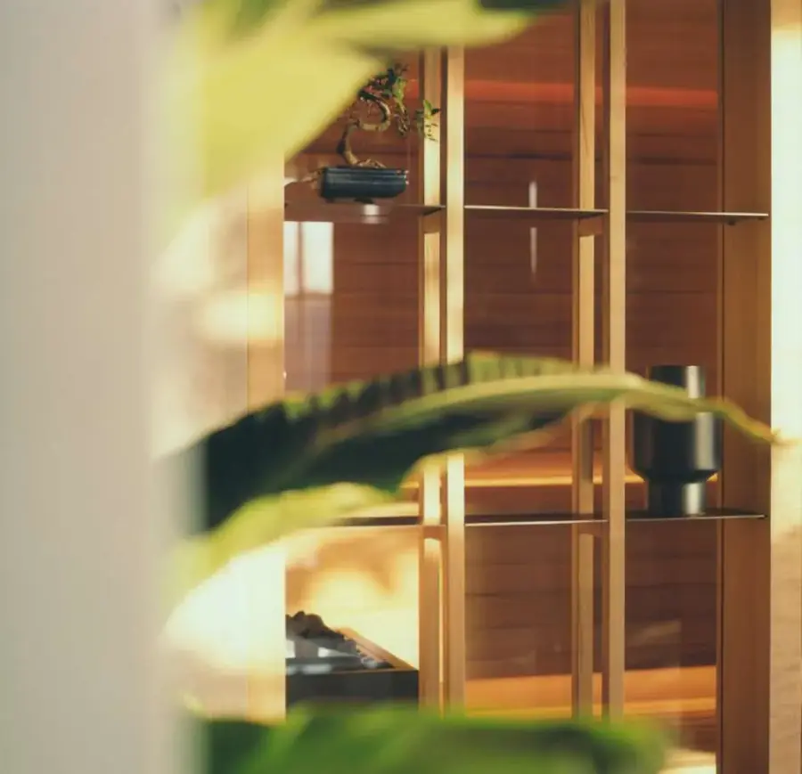
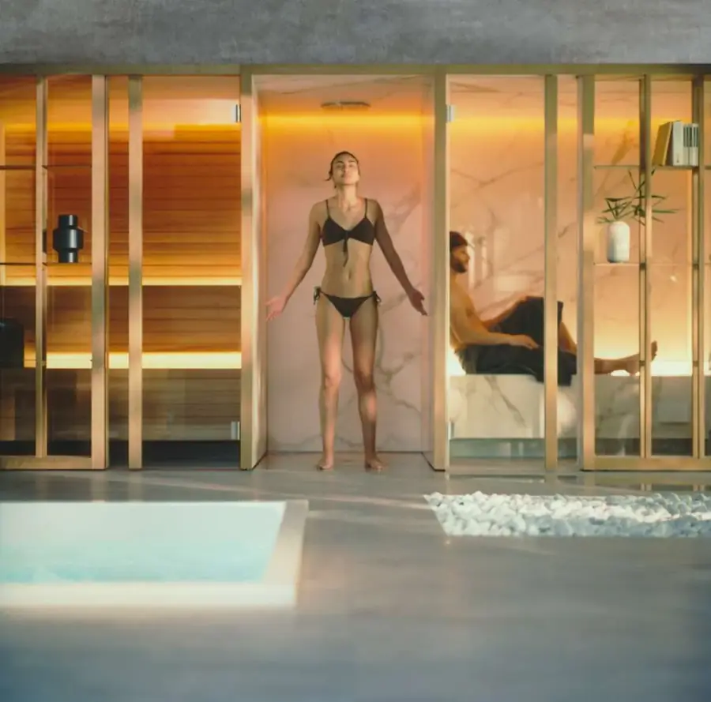
Saunas, hammam y minipiscinasSauna + Hammam + Shower Yoku Spa - EFFE
Effe ofrece el mayor confort y cuidado personal gracias a su nueva línea Yoku Spa. Una colección compuesta por sauna, baño turco y ducha efecto lluvia con la que disfrutar en casa de un momento íntimo de bienestar para uno mismo.
Replicando las tonalidades y texturas de la naturaleza, Effe trabaja con las máximas calidades en materiales como la madera y el gres porcelánico. Dos acabados que, combinados entre ellos, elevan cualquier estancia hacia un oasis de calma y desconexión.
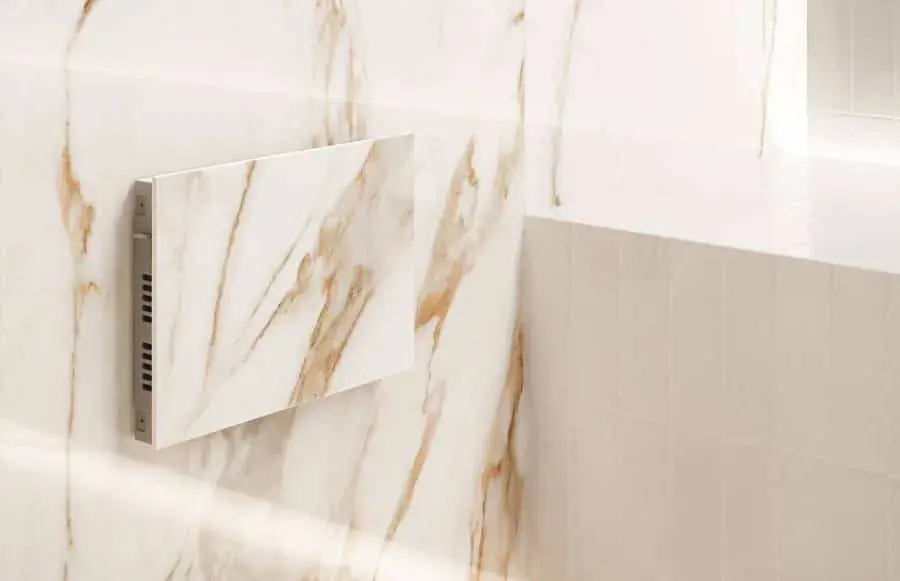
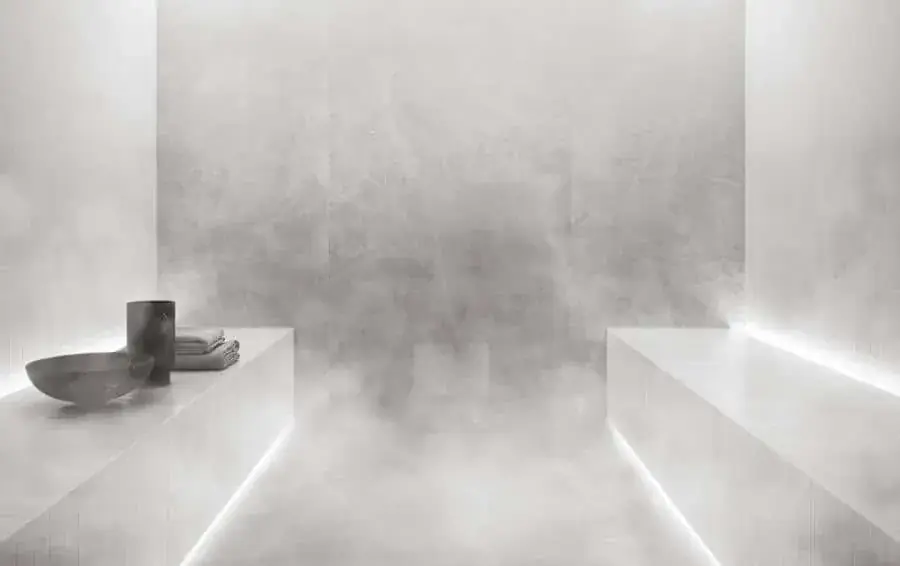
Saunas, hammam y minipiscinasGenerador de Vapor Inside - EFFE
La especializada marca en el mundo del confort presenta su último artículo para baños y SPAs, el generador de Vapor Inside.
Gracias a su experiencia, EFFE ofrece soluciones personalizadas que combinan tecnología avanzada, eficiencia energética y respeto por el medio ambiente. Entre todos, el modelo Inside destaca por mezclar las últimas innovaciones funcionales con un diseño vanguardista.
Mientras la variante ‘Glass’ se distingue por su elegante y sofisticado panel de vidrio blanco, la versión ‘Camouflage’ permite combinar el panel frontal del generador con la decoración del baño.
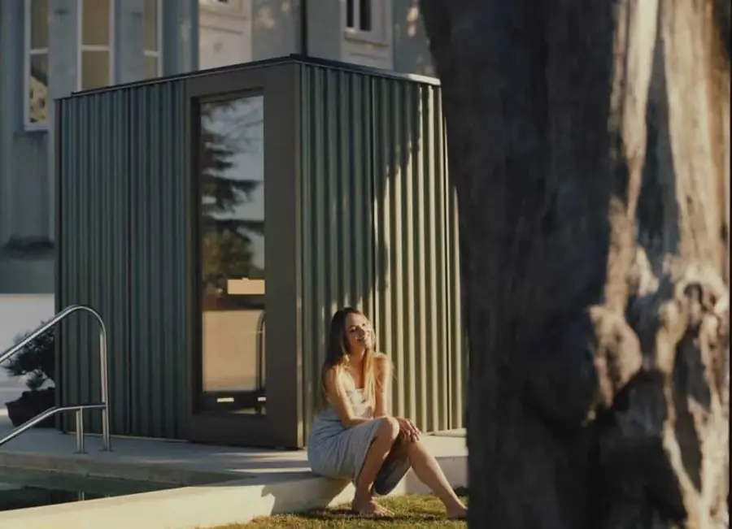
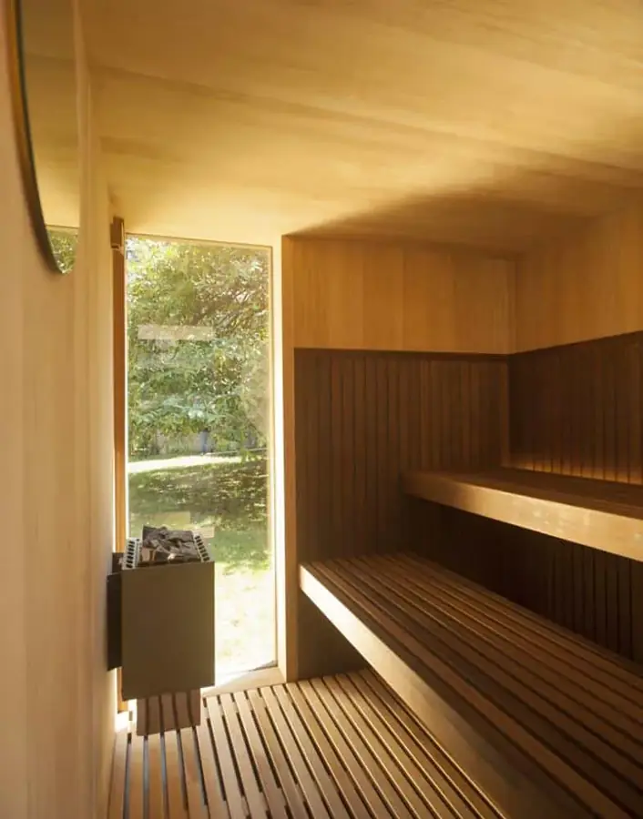
Saunas, hammam y minipiscinasSauna para exteriores Cabanon – EFFE
Con claras resonancias a Le Courbusier, famoso icono de la arquitectura y el diseño, Cabanon es una sauna exterior de EFFE, donde la estética y el placer se hacen uno, para ofrecer una experiencia al alcance de pocos.
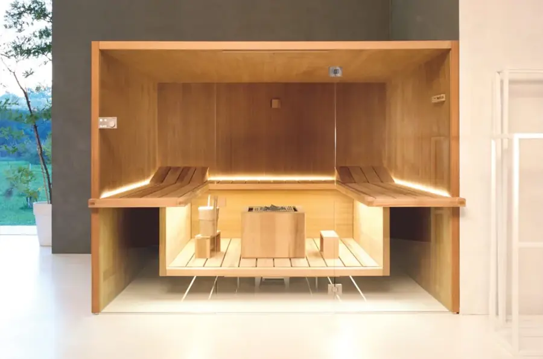
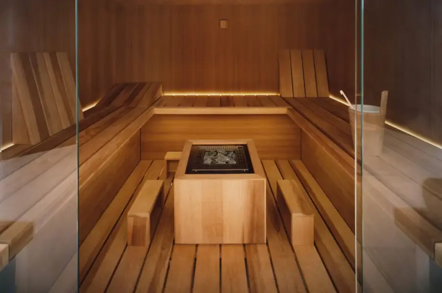
Saunas, hammam y minipiscinasSauna Air – Effe
Una sauna diseñada con foco en la elegancia y la comodidad. Air está concebida como punto de reunión. La estufa está situada justo en el centro. Incorpora iluminación LED debajo de los bancos, con el objetivo de crear un ambiente agradable y relajado, para disfrutar en soledad o en compañía.
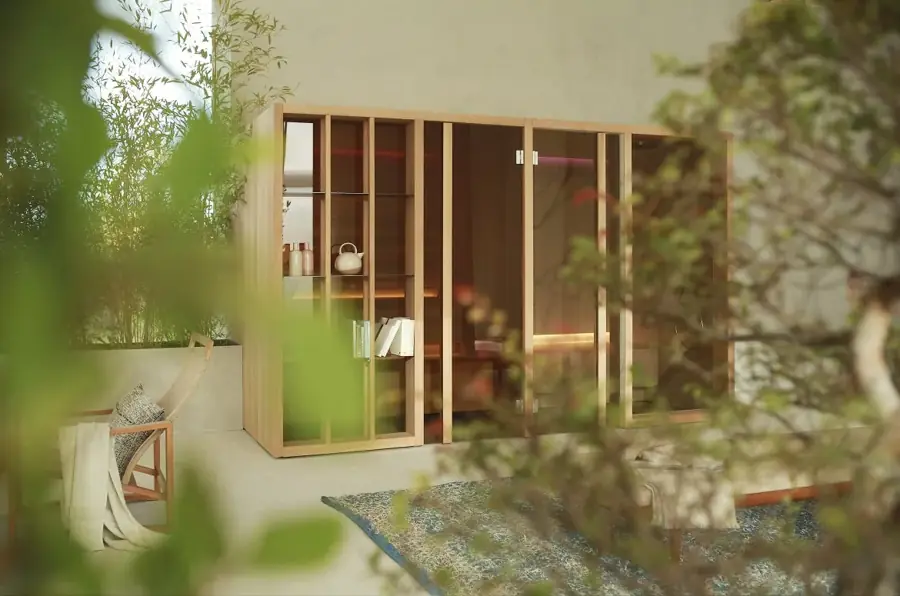
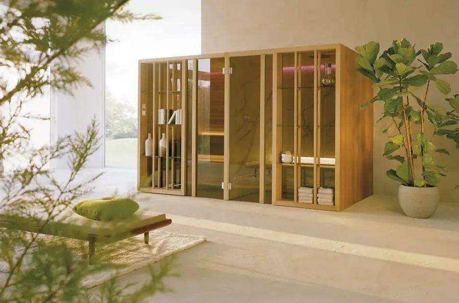
Saunas, hammam y minipiscinasSauna y Baño Turco Yoku SH – Effe
La sintonía perfecta entre sauna, baño turco y ducha que te transporta al auténtico relax. Una sauna diseñada por el inconfundible Marco Williams Fagioli, que destaca por sus elementos arquitectónicos de madera natural que evocan un bosque arbolado.
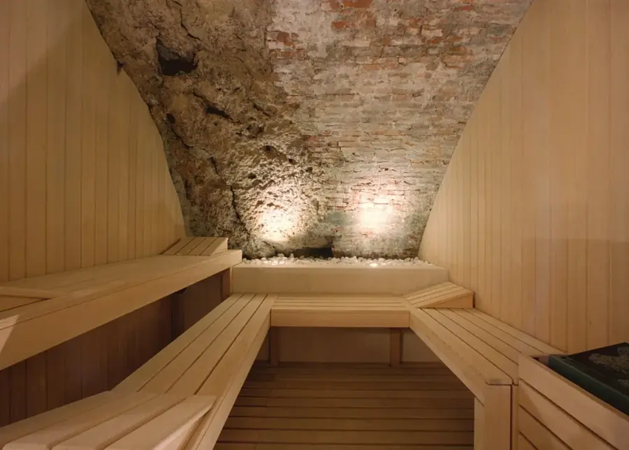
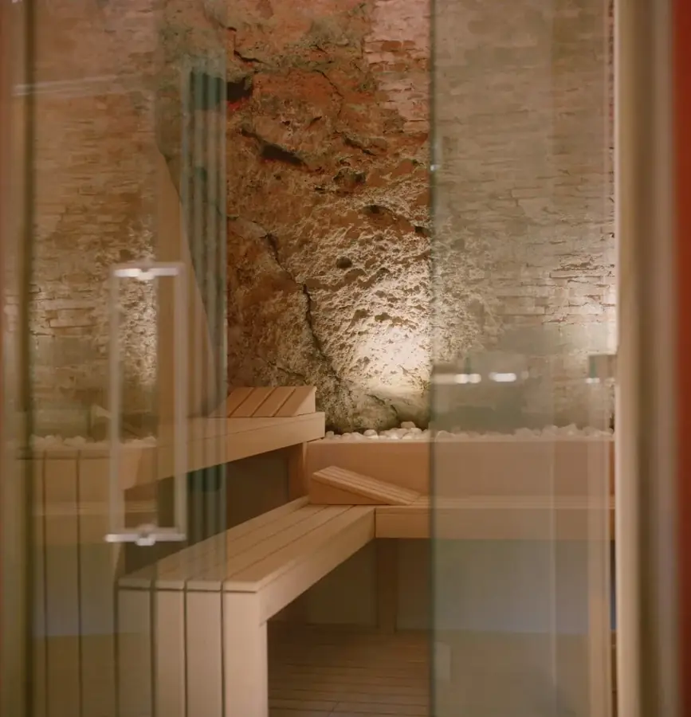
Saunas, hammam y minipiscinasSaunas y hamman Custom Made – Effe
Effe cuenta con un cuarto de siglo de experiencia en la fabricación de saunas y hamman. Además de un extenso catálogo, ofrece la opción de personalizar los espacios de baño, según las necesidades del proyecto, ya sea público o privado.
- Saunas, hammam y minipiscinas
Bañera de hidromasaje Just Silence Compact – Villeroy&Boch
El nuevo modelo Just Silence Compact es una bañera de hidromasaje pensada para espacios pequeños, incluso para terrazas o espacios de exterior. Villeroy& Boch nos hace una propuesta equipada con todas las prestaciones técnicas de una gran bañera de hidromasaje.
Just Silence Compact, además, tiene un diseño exclusivo, moderno, pensado para espacios del futuro, ideal para viviendas de no más de tres personas.
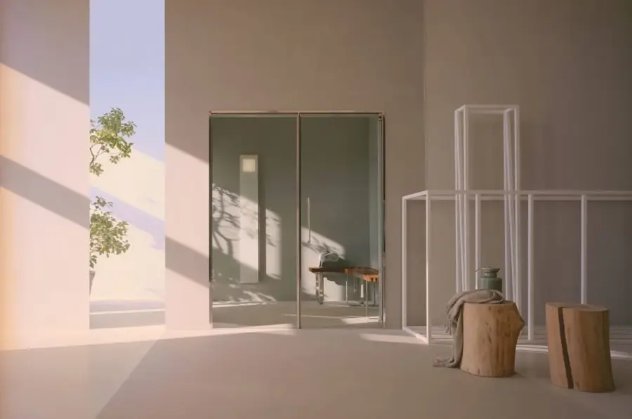
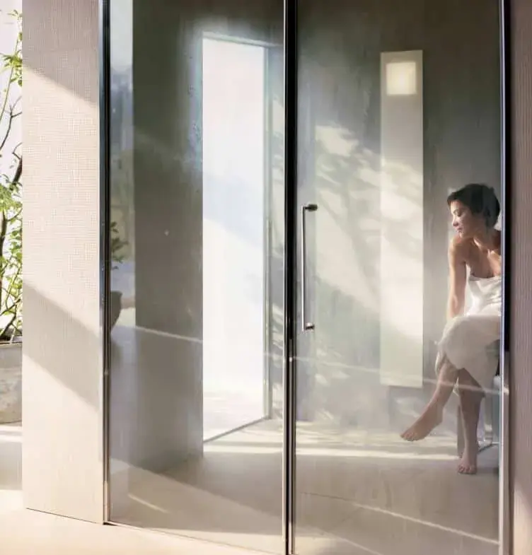
Saunas, hammam y minipiscinasGenerador de vapor Touch & Steam - Effe
Effegibi lanza Touch & Steam, un generador de vapor óptimo para crear la sensación de un hammam, tanto a nivel de un baño en una casa particular, como para lugares de mayor tamaño.
Este elegante generador de vapor, incorpora una novedosa tecnología, óptima en cuanto a la calidad del vapor que crea, la densidad e higiene del mismo, incorpora cromoterapia y aromaterapia, y se puede adaptar perfectamente a cualquier ducha gracias a su diseño.
Junto a lo comentado, merece la pena destacar el sistema de ventilación que incorpora, gracias al que la gradación de la temperatura en el interior de la ducha se minimiza al máximo. Un detalle que aporta gran confort adicional.
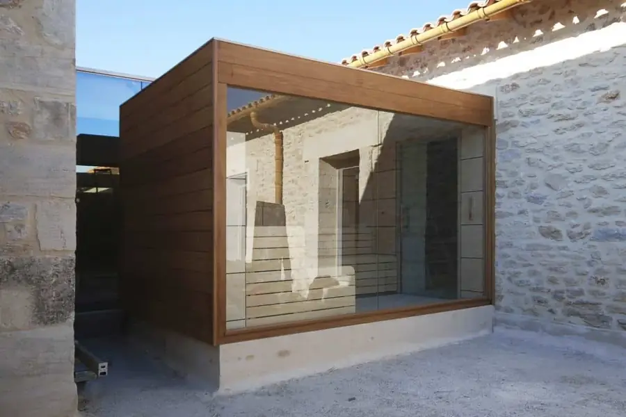
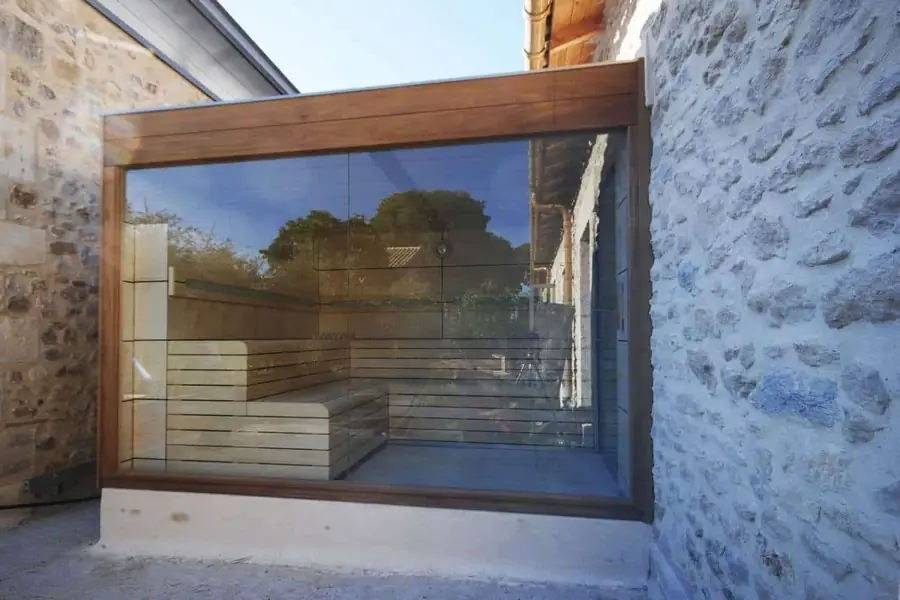
Saunas, hammam y minipiscinasSauna para exterior Kubik - Inbeca
¿Quién no querría una sauna exterior de diseño vanguardista en su casa, que le aportara el relax y confort necesario para compensar el ritmo frenético que llevamos hoy en día?
Con esta estupenda idea en mente, INBECA Wellness Equipment acaba de presentar su nueva sauna para exterior KUBIK, una sauna creada para que puedas dejarla a la intemperie, con un diseño minimalista de elegantes líneas arquitectónicas, que además incorpora un sistema de drenaje novedoso que evita las dos vertientes de los tejados más tradicionales.
Revestida con madera tropical de alta calidad tratada con aceites especiales que la protegen, además de las propias prestaciones que esperas en una sauna, esta te ofrece una durabilidad incomparable, y una sensación de amplitud y profundidad única, gracias al acristalamiento con el que está fabricada.
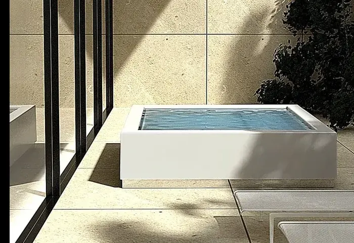
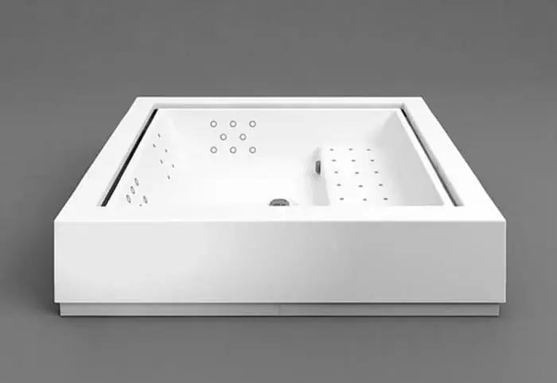
Saunas, hammam y minipiscinasMinipiscina Quadrat - Kos
Colección de minipiscinas de interior y exterior, con un borde infinito. En versión independiente e integrada.
La variante independiente, cuenta con figuras geométricas esculpidas. Su base rebajada y la iluminación de tira de LED que incorpora, tiene un efecto visual como si de una forma suspendida en el espacio se tratara. El gran recorte del borde se funde con la superficie del agua.
La versión incorporada de estas minipiscinas, se instala a ras del suelo.